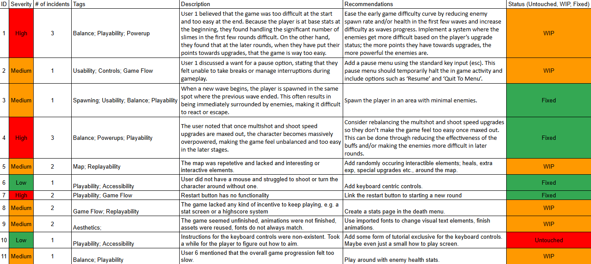
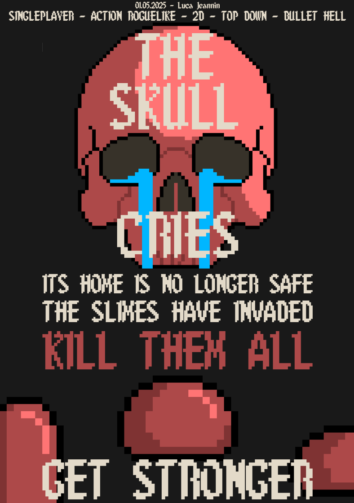

INTRODUCTION
My name is Luca Jeannin. I am a second year student studying Games and Interactive Environments and Behavioural Economics at the Queensland University of Technology. I have experience in languages such as HTML/CSS, JavaScript, Python and C#.
This page will serve primarily as a blog site covering school work, personal projects and personal interests. It will also serve as a centralised record of links, learned skills and projects.
MY LINKS
itch.ioGitHub
YouTube
BLOG POSTS
The project is in it’s final stages, only minor changes and tweaks are being made moving forward. This has been an excellent learning experience for game development in a group and playtesting. Having access to a long list of feedback from several different backgrounds makes the game development process much easier. The development of the game itself also taught me a lot, delving into the intricacies of GDevelop’s variable, code and object handling mechanics has made me look back at previously primitive solutions and be grateful that I am given opportunities such as this to improve my skills.
GDevelop itself is not perfect and, specifically in regards to the built in animation software, leaves much to be desired. The program would crash, write over existing assets, and handle sprites and animations in nonsensical ways, at worst erasing work, at best creating more. As much as I enjoyed making the game alongside my group members, this platform is the one thing keeping me from continuing the development cycle and turning this into something I can truly be proud of.
Below is the gameplay demo as it will likely remain until submission.
Playtesting was a simple process. Two members of the team modified the playtest interview, findings and survey sheets provided to us in order to better suit our game. Finding people was not difficult at all, we were all able to find at least one person to play the game, two of us found two people to play, totalling 6 naïve play testers. They provided an amazing amount of insight into the game’s current state from a player’s perspective.
There were several positive things mentioned, most notably about the aesthetic, animations and feel of the game. However, it was not without it’s flaws. As the focus of the game, early on, had been the style and the basic gameplay elements, the combat and gameplay loop were lacklustre.
Several users mentioned the lack of challenge in the long run, while others mentioned being overwhelmed in the earlier parts of the game. This was addressed by changing the enemy spawn times to a tuned formula as opposed to a linear increase. This meant the enemies spawn far slower at the beginning of a game than near the end. An additional enemy type was added to make the later rounds more challenging, alongside an increase in enemy stats based on what round the player was on.
Many of the players found the number of upgrade points per level up to be too many, making them too strong, too soon. This was tweaked, changing the number of points given from 3 to 1, to compliment the decrease in early enemy numbers, but a new method of collecting upgrade points was added in the form of 1-3 randomly spawning pickup items per round. The pickup items also addressed the lack of features on the map, making gameplay boring.
One of the players mentioned a lack of motivation to start another round as they did not have any kind of score to beat. This was addressed in the form of the stats sheet displayed in the death menu, showing the player a detailed breakdown of their most recent round.
This is the playtest chart as of the writing of this post.
(Right click > 'open image in new tab' if you cannot read it)

The game I was creating in my personal time was chosen by our group as the game we would work on and playtest, as, while it did not have complex features, nor was it entirely playable, it provided promise and opportunity in the number of ways it could be spun. The core aesthetic and gameplay features were present but nothing monumental had been implemented in order to make it unique. The team saw this as a great opportunity to use our skills and the feedback we will receive later on to give it it’s own identity.
There were many changes made pre-playtesting in order to prepare the game to be played by naïve players. These include;
1. Fixes to object culling to reduce lag,
2. Adding a start screen as well as a tutorial,
3. Added a death screen that redirected the player back to the start screen,
4. Refining transitions and scene changes.
These changes allowed the game to have a full loop from start to fight to death and made the game, overall, feel far more playable than its previous state.
The name I chose for theb game was “The Skull Cries,” which I paired with a shallow storyline with the purpose of motivating the player to kill the enemies in front of them.
This was the poster presented to my group.

The game wasn’t very interesting to make, I skipped out on implementing several features, notably; a timing system, gameplay loop, textured track sections and tire wetness. The speedometer was the most interesting part to develop, making me work with new elements that I had not previously worked with, specifically, refencing object based variables that aren’t directly related to GDevelop (Max movement speed). I also made me address custom collision boxes on sprites, which I had never touched before. Again, my main focus was on my personal game project which I am hoping to use for Assignment 3.
The game’s development was stunted by the development of my personal project, giving it quite underwhelming progress. I was not pleased with the built in functionalities GDevelop offers for top-down movement so I opted to code a new system, giving me more control over the car’s movement, allowing me to make it more difficult to control, as showcased in the video. I made a simple track by painting a road using a sprite and manually setting the collision box. The code is simple, as soon as the car loses contact with the road’s collision box the car loses all of it’s speed, “GAME OVER” is flashed on the screen and the user can restart with ‘space’. I used my visual elements experience from the asteroid game to make the speedometer that reacts appropriately to the car’s speed.
Here is a video demonstration of the features.
Most of the core features have been added to the game. The player runs around in 8 directions with their sprite only changing from left to right. They can shoot where the mouse is pointing. They have 100 health and take 10 per hit. The enemies also have 100 but take 50 per bullet. These numbers are obviously subject to change. The main floor has been set and will most likely stay at 2560x1440 with a camera view of 1920x1080. The camera follows the player unless it is about to display any area outside of this floor, in which case it will stop. The enemies spawn on platforms around the floor in random locations. Small stats such as the player movement, enemy movement, volecity, damage, health, etc. are not set in stone and are very likely to change.
Here is a video demonstration of the features.
The game will be a top-down survival shooter similar to Vampire Survivors. The player will survive by shooting hordes of enemies. The player will be able to walk in 8 directions; up, down, left, right and the diagonals along each, however, they will be able to shoot in every direction. The enemies will move freely and walk constantly towards the player. The number of enemies and their strength will scale with each level. After each kill, the enemies will drop experience, after collecting a certain amount of experience the player will be able to select an upgrade to have within the round, these will include things such as move speed, shoot speed, damage, health, healing rate etc. Every few levels they will be able to select a permanent upgrade, e.g. the first permanent upgrade is available after 10 regular upgrades, the next one is available after 12, the next after 14. There will be 3 enemy types, regular, with a regular amount of health e.g. 100, small, who move faster but have less health e.g. double move speed with 50 health, and large enemies who move slower but have more health e.g. double health, half move speed. Each enemy type will drop different amounts of xp. XP and the health of the enemies will remain the same throughout each round, the challenge does not come from an increase in enemy stats but an increase in their numbers.
Here is a similar game to vampire survivors with all of the aforementioned features highlighted.

The top-down racer game will have the regular elements of a racer, a car, a track and a timer. The player will use up arrow to accelerate, down arrow to brake, left and right arrows to steer and space for the handbrake. It will be entirely singleplayer, meaning no opponents whatsoever, and will be a game entirely based on your time and improving it. The game will feature several tracks, ranging from easier, wide turn low debris tracks to more difficult, tight-turning, debris filled tracks. They will also feature different surfaces, such as road, dirt and sand, each will change the way the car is handled and each will react differently when the car’s tires are wet, which happens when the player drives through a puddle. The game will be centred around being difficult and requiring the player to study the track and be relentless in their search for speed.
I learnt a great deal through the use of GDevelop’s visual tools, not just within GDevelop, but within the workflow of game design. The use of filters, on individual items and on entire scenes was a useful skill to develop as I’m sure it will become applicable in the future when doing visual work on other projects. I also developed my skills in creating back-end solutions to front-end problems, such as the coordinate display. While I may have been able to make my own font and change a text element to display the player’s coordinates using the font, it would not have been nearly as tweakable, customizable or genuine as the solution I found.
The development process for the asteroids game revolved primarily around learning how to manipulate visual elements within GDevelop. The one gameplay element created was an enemy that moves towards you at a constant speed and is able to predict where you will be and shoot lasers accordingly. As displayed in the video, when moving in a straight line, every shot taken by the enemy will eventually hit you. However, the system for combat was not implemented. The key features implemented were a CRT effect on all visual elements, a rotating radar in the top corner, screen distortion to replicate curved screens and a location display. The location display was by far the most difficult, requiring each digit of the player’s location to be extracted and assigned to it’s own sprite.
Here is a video demonstration of the features.
Asteroids, originally, had the sole challenge of dodging and breaking meteors flying towards or around the player, while allowing them to move freely within a 2-dimensional space. To add challenge, the player will not face other ships, varying in manoeuvrability, shot type and awareness. The player no longer has a completely clear space to work with and must pay attention to obstacles such as small ships and planets. The player will receive an upgrade over the old game in the form of new types of guns that change how to player shoots and personal upgrades, such as the speed at which they move, their health and informative displays, such as another opponent’s trajectory and a mini map to give them an idea of where other ships and obstacle are. The game has no definitive win state, however, upon dying, the player is shown a summary of their game, such as how long they were alive, how many other ships of each difficulty they shot down and what upgrades they acquired, allowing the player to set the standard for what a good game looks like.
My process was heavy based around the GDevelop’s built in tools, which, I feel, limited my control over many aspects of the game. It also pulled my attention away from those more crucial details to focus on the rest of the game as, in my mind, those features had been looked after. It was only during my personal playtest that I realised how slow and awkward the movement felt. Watching a small alien take several seconds to reach maximum speed felt wrong, especially in a game that is trying to emphasise movement and speed.
Something I am very thankful for, however, is GDevelop’s built in sprite and animation editor. Had I not convinced myself that I shouldn’t put too much effort into a rough version of a game, I would have utilized these to their full potential to completely animate anything that needed animation: character, upgrades, background. With creating static sprites alone, the tool was very helpful, providing some tools that I had not seen in a pixel art software anywhere else.
I didn’t implement any kind of audio into this game, partially because I was developing it without headphones in and partially because sound design for a rough draft did not seem completely necessary. Looking back, the game would only really have had 3 sounds, 4 if I was creative and assigned a sound to the player landing, but that can be an addition for after public playtesting.
The draft of the platformer game is complete. You are an alien who falls down a cave and you need to make your way back up to your ship by collecting upgrades and making tough jumps. The character has very simple animations and unrefined movement stats. The upgrades are basic and unrefined, providing an arbitrary amount of each stat. The background is fixed and is a repeating rock pattern. The platforms are more repeating rock patterns, light on the outside, darker on the inside and black further in. The game lacks any kind of menus or settings, points system, timer or option to restart without relaunching. The controls consist of 3 keys: A, D and W, for left, right and jump respectively. The gameplay loop is simple and may have been effective if the user didn’t have to relaunch to try and beat their previous time, which would be completely based on their intuition as there is no timer. The coyote time is very lenient and almost acts as a double jump.
I would have liked to spend more time developing my own version of many of the features, such as the player movement, timer, upgrade and coyote time in order to have complete control over how the function. I did however learn about hiding and showing elements and modifying objects behaviour stats through events.
Here is a video demonstration of the features.
The platformer takes place in a single room. The aim is to reach a goal within, or climb out of, this single room. The player must collect upgrades for their character as they climb higher. The challenge comes in the form of precise jumps, most of which only become possible once the player has collected a certain amount of each upgrade. The player is punished for not executing their jumps well enough by causing them to fall to the bottom of the room and start the climb up again. The replayability appears in the form of the player’s desire to become faster at climbing out of the room. Games that follow a similar gameplay style include Jump King or Pogostuck. These games do not have upgrades and therefore rely solely on player skill to create boundaries in progress like the game in this pitch. The game can follow any theme or style, which will probably be decided during or after the production of the game. Styles from other games include climbing out of caves, climbing up towers or traversing fantasy worlds.
I have an interest in individuality and identity. This translates into my aim when playing or making games, which is that the player can create a second version of themselves and play uniquely from anyone else. Another interest of mine is prioritising user experience over all else. As the games in GDevelop are simple, my aim for this semester is to improve my ability to create a great user experience regardless of my engine. I have experience with JavaScript and C# and find logic very easy to figure out, that is why, moving forward, my aim is not solely to improve my programming or engine utilisation skills, but instead to focus primarily on how I apply my previously acquired skills and knowledge to make the best game that I can.